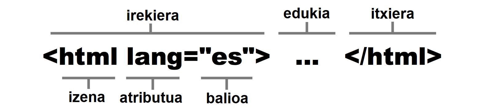

Bezeroaren aldeko lengoaiak
HTML -HyperText Markup Language-
HTML (HyperText Markup Language) parentesi angeluarrez inguratutako izenekin definitutako etiketa
multzo batez osatutako lengoaia da. Parentesi angeluarrek etiketa mugatzen dute eta izenak adierazten duen eduki mota definitzen. (<html>) etiketak adierazten du edukia HTML kodea dela. Etiketa batzuk banaka deklaratzen dira (<br> adibidez), etiketa bakarreko elementuak dira.
Beste batzuk irekiera- eta itxiera-etiketez. Itxierakoak izenaren aurrean alderantzizko barra bat darama. Hauei irekiera- eta itxiera-etiketadun elementu esaten zaie.
Banakako eta irekitze-etiketek atributuak izan ditzakete edukiei buruzko informazio gehigarria emateko (<html lang=”es”> ... </html> adibidez).
Etiketa bakarreko elementuak haien edukia aldatzeko zein kanpoko baliabideak sartzeko erabiltzen dira; irekiera- eta itxiera-etiketak dituzten elementuak, berriz, dokumentuaren edukia mugatzeko, beheko irudiak erakusten duen bezala.

Lengoaiak(1): lang atributua lengoaiaren berri emateko html-ri
Hainbat elementu konbinatu behar dira dokumentu bat definitzeko. Elementuak goitik beherako sekuentzian zerrendatzen dira, eta beste elementu batzuk izan ditzakete barruan.
Adibidez, goiko irudian agertzen den elementuak adierazten du bere edukia HTML kode gisa interpretatu behar dela.
Beraz, dokumentu horren edukia deskribatzen duten gainerako elementuak etiketen artean adierazi behar dira eta.
Era berean, elementuaren barruko elementuek beste elementu batzuk izan ditzakete.
Hurrengo adibideak HTML dokumentu erraz bat erakusten du, oinarrizko egitura bat definitzeko eta pantailan Kaixo guztioi! mezua erakusteko behar diren elementu guztiak biltzen dituena.
<!DOCTYPE html>
<html lang="es">
<head>
<title>Nire lehen HTML dokumentua</title>
</head>
<body>
<p>Kaixo guztioi!</p>
</body>
</html>
Horra hor kode erraz bat egitura konplexukoa. Lehenengo lerroan, dokumentua HTML5 motakoa dela adierazten duen etiketa bakarreko elementu bat dago (<!DOCTYPE html>).
Ondoren, irekitze-etiketa bat (<html lang="eus"> )bere atributuarekin, orriaren hizkuntza zein den adierazten duena. Honako honetan euskara.
Segidan bi elementu datoz bakoitza bere irekiera- eta itxiera-etiketekin. Burua <head></head> eta gorputza <body></body>.
Elementu horiek, aldi berean, elementu gehiago dituzte barnean, beren edukiekin <title>Nire lehen HTML dokumentua</title> buruan, eta <p>Kaixo guztioi!</p> gorputzean.
Oinarrizkoa: oro har, elementu oro bihur daiteke edukiontzi elementu batzuk barnean hartuz edo edukiontzi barneko elementu. Soilik egiturazkoak diren elementuak, hala nola, <html>, <head> eta <body> daukate leku espezifikoa HTML dokumentu batean, gainerakoak malguak dira nahierara koka daitezke.
Oinarrizkoa: atributuak irekiera-etiketaren (edo banakako etiketen) barruan deklaratzen dira beti, eta izena berdin balioa egitura bat izan dezakete (<html lang=”eus”></html>).
CSS Cascading Style Sheets
HTML elementuen estiloak definitzeko erabiltzen den lengoaia da, hala nola tamaina, kolorea, hondoa, ertza, etab. Nabigatzaile guztiek elementu gehienei estilo lehenetsiak esleitzen dizkieten arren, estilo horiek, oro har, gure webguneetarako nahi dugunetik urrun daude.
Estilo pertsonalizatuak adierazteko, CSSk propietateak eta balioak erabiltzen ditu. Eraikuntza honi deklarazioa deitzen zaio eta bere sintaxiak bi puntu ditu propietatearen izenaren ondoren, eta puntu bat eta koma bat amaieran linea ixteko.
Lengoaia(2): CSS nola idazten den. Propietatea + balioa
Deklarazio horretan koloreari #FF0000 balioa esleitzen zaio. Propietate hori gero HTML elementu bati aplikatzen bazaio, elementu horren edukia gorriz agertuko da, #FF0000 balioak kolore gorria adierazten baitu.
CSS propietateak giltzak erabiliz taldeka daitezke. Propietate bat edo gehiago dituen talde bati erregela deitzen zaio eta erregela identifikatzen duenari hautatzaile.
body {
width: 100%;
margin: 0px;
background-color: #FF0000;
}
body hautatzaileari erregela hori aplikatuta honelako itxura hartuko du gure orriak:
- width:100%; Pantailaren zabalera osoa izango du.
- margin:0px; ez goian, ez behean, ez ezkerrean, ez eskuinean ez du izango marjinik.
- background-color:#FF0000; den dena gorria izango da.
Oinarrizkoa: HTML elementuei CSS estiloak aplikatzeko hainbat teknika daude. CSS propietateak aztertuko ditugu, eta HTML dokumentu batean nola sartu 3. eta 4. kapituluetan.
JavaScript
HTML eta CSS ez bezala, JavaScript programazio-lengoaia bat da.
Bidezkoak izateko, lengoaia horiek guztiak programazio-lengoaiatzat har daitezke, baina praktikan zenbait desberdintasun daude nabigatzaileari jarraibideak emateko moduan.
HTML nabigatzaileak informazioa antolatzeko interpretatzen duen adierazle-multzo bat bezala da; CSS nabigatzaileari dokumentua pantailan aurkezteko prestatzen laguntzen dioten estiloen zerrendatzat har daiteke (nahiz eta azken zehaztapenak lengoaia dinamikoagoa bihurtu zuen), baina JavaScript programazio-lengoaia bat da, C++ edo Java bezalako programazio profesionaleko beste edozein lengoaiarekin aldera daitekeena.
JavaScriptek besteek ez bezala, ekintza pertsonalizatuak egin ditzazke, hala nola, balioak biltegiratua, algoritmo konplexuak kalkulatu, dokumentuko elementuekin elkarreragin, eta horien edukia dinamikoki prozesatu.
HTML eta CSS bezala, JavaScript ere nabigatzaileetan sartzen da eta, beraz, gure dokumentu guztietan dago eskuragarri. Dokumentu baten barruan JavaScript kodea deklaratzeko, HTMLk <script> </script> elementua eskaintzen du.
<script>
function koloreaAldatu() {
document.body.style.backgroundColor = "#0000FF";
}
document.addEventListener("click", koloreaAldatu);
</script>
Kode horrek <body></body> elementuaren atzealdeko kolorea urdinera aldatzen du erabiltzaileak dokumentuan klik egiten duenean.
Oinarrizkoa: </script> elementuari esker JavaScript kodea kanpoko fitxategietatik ere kargatu dezakegu.
Zerbitzariaren aldeko lengoaiak
HTML, CSS eta JavaScripten programatutako kodeak erabiltzailearen ordenagailuan (bezeroa) exekutatzen ditu nabigatzaileak. Horrek esan nahi du, webguneko fitxategiak zerbitzarira igo ondoren, ezin direla aldatu ordenagailu pertsonal batean deskargatu eta haien kodeak nabigatzaileak exekutatzen dituen arte. Horrek webgune erabilgarri eta interaktiboak sortzea ahalbidetzen badu ere, une batzuetan informazioa zerbitzarian prozesatu behar dugu erabiltzaileari bidali aurretik.
Informazio horrek sortutako edukiari eduki dinamikoa esaten zaio, eta zerbitzarian exekutatutako eta helburu horrekin bereziki diseinatutako lengoaietan programatutako kodeek sortu izan dira (zerbitzariaren aldeko lengoaiak).
Nabigatzaileak kode mota hori duen fitxategi bat eskatzen duenean, zerbitzariak exekutatu egiten du, eta, ondoren, emaitza bidaltzen dio erabiltzaileari erantzun gisa. Kode horiek edukia eta dokumentuak denbora errealean sortzeko ez ezik, nabigatzaileak bidalitako informazioa prozesatzeko, erabiltzailearen datuak zerbitzarian gordetzeko, kontuak kontrolatzeko eta abarretarako ere erabiltzen dira.
Hainbat lengoaia daude zerbitzarietan kode exekutagarria sortzeko. Ezagunenak PHP, Ruby eta Python dira. Hurrengo adibidea PHPn idatzitako kode baten lagina da.
<?php
$nombre = $_GET['minombre'];
print('Su nombre es: '.$nombre);
?>
Kodeak nabigatzaileak bidalitako balio bat jasotzen du, memorian biltegiratzen du eta mezu bat sortzen du berarekin. Kode hori exekutatzen denean, azken mezuarekin dokumentu berri bat sortzen da, fitxategia bezeroari bidaltzen zaio berriro, eta, azkenik, nabigatzaileak edukia pantailan erakusten du.
GARRANTZITSUA: zerbitzari-lengoaiek beren teknologia erabiltzen dute, baina HTML5-ekin lan egiten dute erabiltzaileen kontuen erregistro bat eramateko, zerbitzarian informazioa gordetzeko, datu-baseak erabiltzeko, etab.
Webgunetako lengoiaiez galdetegi txikia
EKIN
Erantzun eta lau segundo izango dituzu iradokizuna irakurtzeko. (Sei galdera guztira)